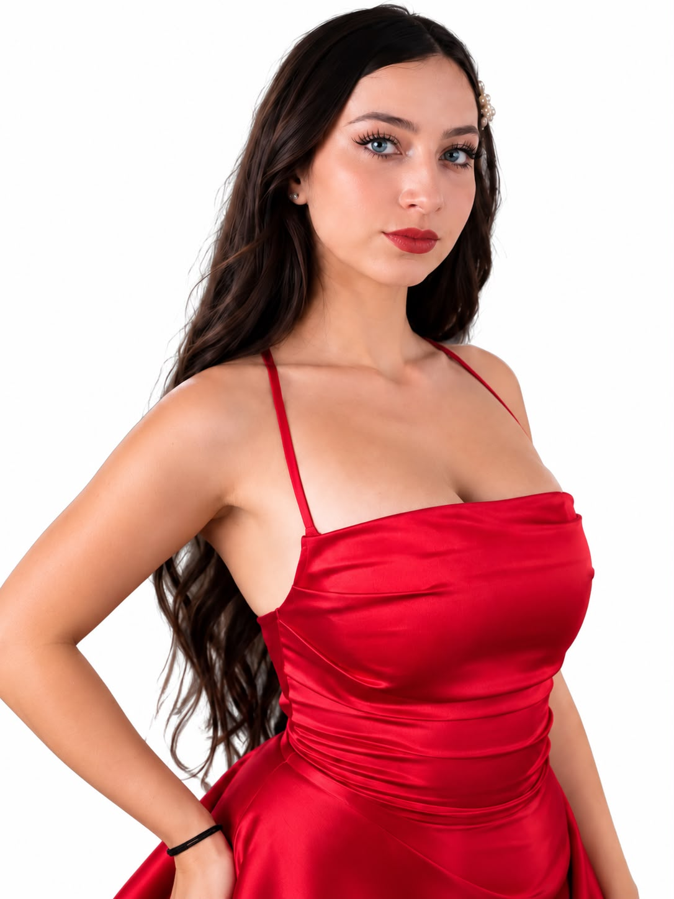

Cristina Vergara
18 añosImbabura
Cristina Vergara
Cristina Vergara es una mujer humilde, sencilla y alegre, que se caracteriza por su carisma y calidez humana. Siempre está dispuesta a ayudar de corazón, escuchar y brindar cariño sin esperar nada a cambio. Su sonrisa refleja su esencia y su vocación de servicio, pues encuentra su felicidad en compartir, ayudar y ver sonreír a los demás. Cree en la bondad y la autenticidad como formas de llegar a cada corazón, dejando una huella positiva en quienes la rodean.